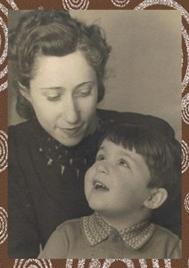

האתר הזה משמר את זכרו וסיפור חייו של שלמה גולדשמיט, אך גם משמש מקום מרכזי למשפחה כולה — לירן, הראל, נבו, עידו והילה.

גלריית תמונות מודרנית בסגנון Google Photos עם תמונות מארכיון המשפחה.
מקום אחד שבו בני המשפחה יכולים לשתף תמונות, זכרונות וסיפורים.
אזור מיוחד לזכרו של שלמה גולדשמיט עם תמונות, סיפורים ומסמכים.
שלמה גולדשמיט נולד בשם אוסקר גולדשמיט בשנות ה-30. לאורך חייו בנה משפחה רחבה והשאיר אחריו ארכיון עשיר של תמונות, מסמכים וסיפורים.
לעמוד ההנצחה